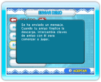

20 |
Cómo enviar la versión demo (Dr. Mario) |
 |
Puedes enviar la versión demo del juego a aquellos amigos que todavía no hayan comprado Dr. Mario & Bactericida. Antes de enviarla, asegúrate de que el servicio WiiConnect24 esté correctamente configurado (ver “Uso de WiiConnect24”). Nota: La versión demo solo se puede utilizar para disputar enfrentamientos amistosos a través de la red contra aquellos jugadores que dispongan de la versión completa del juego. Si ambos jugadores disponen de versiones demo, no podrán jugar. Para poder enviar la versión demo, necesitarás tu propia clave de amigo. Puedes consultar tu clave de amigo seleccionando CWF DE NINTENDO en la pantalla de selección del modo. Una vez dentro de este menú, selecciona AJUSTES DE AMIGOS y finalmente, CONFIRMAR CLAVE DE AMIGO. ● Enviar la demo En la pantalla de selección del modo, selecciona CWF DE NINTENDO para acceder al menú de la CWF de Nintendo y, a continuación, selecciona ENVIAR DEMO. Cuando aparezca tu agenda, selecciona el amigo Wii al que deseas enviar la versión demo y pulsa SÍ para confirmar. 
Una vez que se haya enviado la demo, aparecerá un mensaje de confirmación. Nota: No se puede enviar esta demo a amigos de otra región, ni a aquellos que no dispongan de una clave Wii. ● Recibir la demo Una vez que hayas enviado la versión demo a tu amigo, este recibirá un mensaje a través del tablón de Wii. Después de haber leído el mensaje, podrá descargarla. Cuando finalice la descarga, tu amigo tendrá que obtener una clave de amigo dentro del juego y posteriormente tendréis que registrar vuestras respectivas claves de amigo (ver “Ajustes de amigos”). Para poder jugar una partida entre vosotros, selecciona CWF DE NINTENDO desde la pantalla del menú de Dr. Mario y accederás a la pantalla del menú de la CWF de Nintendo. Desde esta opción, selecciona DESAFÍO Wi-Fi y, a continuación, INVITAR A UN AMIGO. Finalmente elige a aquel amigo contra el que quieras jugar. Nota: Solo aquella persona que posea la versión completa de Dr. Mario & Bactericida podrá invitar a la otra. Los ajustes de opciones y los resultados obtenidos no quedarán grabados. |
 |
 |